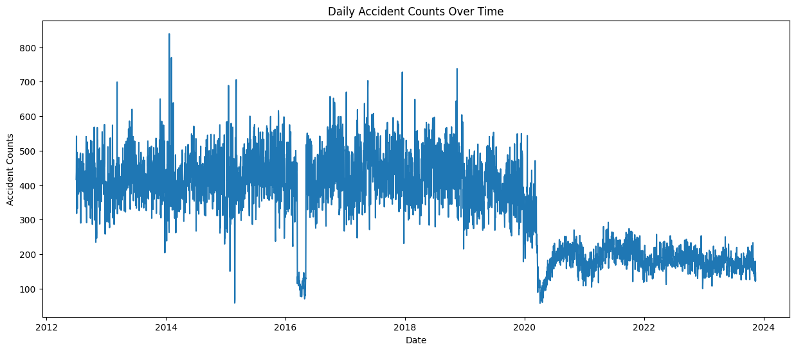
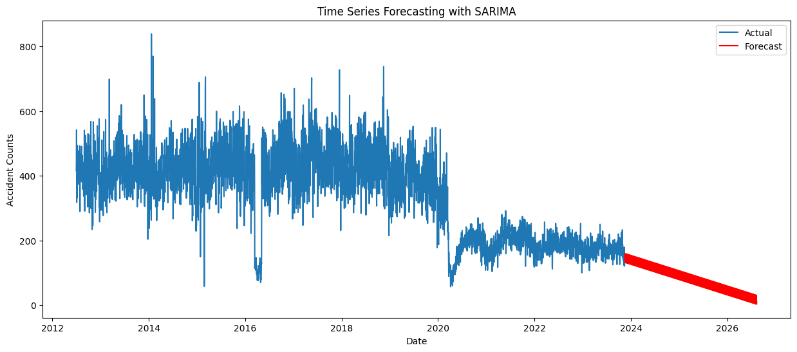

What is the location (like, Street Name, Latitude and Longitude), where,
1. Most and least number collisions have occurred.
2. Most and least number of people are killed.
3. Most and least number of people are injured.
Which vehicle type has involved in,
1. Most number of collisions.
2. Least number of collisions.
What are the most contributing factors for the collisions?
What are the time frames when most and least crashes have occurred?
Data Visualization – showing the number of collisions on a NYC map.
Here we Have Some Graphs and charts for interesting facts
Which vehicle type has involved in and
Most number of collisions done in vehicle
Least number of collisions done in vehicle
We have implemented a python script for time series forecasting using the Seasonal Auto Regressive Integrated Moving Average (SARIMA) model. What are the time frames when most and least crashes have occurred? The SARIMA model is a sophisticated time series forecasting method that considers seasonality, trends, and other temporal patterns in the data.This second visualization helps assess the accuracy of the SARIMA model in predicting future trends.

